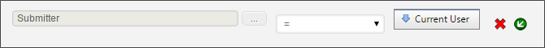

In general, If you have a form field that is meant to represent the identity of a user, then the underlying control should always be a User Picker.
In general, If you have a form field that is meant to represent the identity of a user, then the underlying control should always be a User Picker.User system variables return the value of a user, user group, or comma-separated lists of users or groups. Controls like the User Picker also return a user or users, and system variables referencing a User Picker or Invite control also incorporate all of the User system variable attributes. So, any system variable option can be applied to Form system variables that return a user, e.g., {FORM:UserPicker1, format=email} will return the user's email address.
System variables that return information about a user or users will have the following options:
{CURR_USER, ShowManager=1, format=email}{CURR_USER, ShowDelegate=1, format=email}User system variables also have formatting options, which change the format of the data being returned. The format parameter can be set to the following:
{CURR_USER, format=FormatOption}
{CURR_USER, format=Email}
When comparing User system variables, it is important to make sure that you are comparing the same kinds of values. Ensure that the format options for all the User system variables in a comparison are the same, or else you may end up with an unexpected result.
If users are created on Process Director through synchronization with active directory, certain Active Directory data can be received by Process Director using the following formatting options:
{CURR_USER, format=Phone}
User system variables return different default values based on how they are called. In all cases, the system variable will return a string value, but selecting a user variable from the user interface will return the string value of the user ID, while using the "curly brackets" syntax will return the formatted Name property string of the user. For example, let's assume a user named Diana Stuart is the current user, and the following condition exists in the Condition Builder:
In this case, the Current User system variable has been selected from the dropdown menu on the left side of the condition, while the string {CURR_USER} has been entered on the right side of the condition. With this configuration, the condition will never return true, because the condition will return a GUID string, e.g., "e74bebcc-c8b8-4567-9e27-925c0577c2c4" for the left side, and "Diana Stuart" for the right side. As such, the two values—even though they are attributes of the same user—will never match, because they aren't the same string values.
So, to match two user variables, you should ensure, if possible, that both variables are selected from the user interface. If not, you can format the "curly brackets" side of the comparison with the ID formatter, as described below, which will return the ID instead of the Name of the user.
Usually, this issue arises when you are trying to compare a User form field with the current user. In that case, the form field can always be selected from the left side of the Condition Builder, while the Current User can be selected from the right side.

Now, both values have been selected from the UI, hence, both will return the GUID string for a proper comparison.
In general, If you have a form field that is meant to represent the identity of a user, then the underlying control should always be a User Picker.
The following user system variables are available in Process Director.


This system variable returns the User ID or Formatted User Name, depending on the method used to call the variable, as described in the Return Values section, above.
 Do not use this system variable in email templates. The correct system variable to use to return the task assignee in an email template is the Email User system variable.
Do not use this system variable in email templates. The correct system variable to use to return the task assignee in an email template is the Email User system variable.
This system variable can be formatted according to the options available to User system variables.
{CURRENT_USER}
This system variable returns a comma-separated list of the groups the current user belongs to.
format=id: This optional modifier will return the group ID rather than the group name.
ShowDelegate=true: This optional modifier will return for the user to whom the current user is delegating, rather than the current user.
{CURRENT_USER_GROUPS}

This system variable allows the user to specify a group to be used in comparisons. Information about a group can be gathered via SysVar tags by referencing a group picker form field.
{FORM:someGroupPicker}
someGroupPicker (required): The name of a Group Picker on a form.
The result of a group picker reference can be formatted according to the options available to form field system variables.
This system variable returns a comma-separated list of users that belong to a specified group. If no optional formatting parameters are used, the default return format will be the actual name of the user.
{GROUP_USERS:GroupName|GID, format=userid|guid|id|name}
{GROUP_USERS, GROUPS="GroupName1,Groupname2", format=ID|UID|UserID|Name, Operator=AND|OR}
{GROUP_USERS, GROUPS="Finance,admin", Operator=OR}
GroupName (Required): The group name for the group from which the users should be returned.
OR
GID (Required): The Group ID for the group from which the users should be returned.
Format: Specifies the type of return value to be received. Possible options are:
Groups: To return multiple groups, use a comma-separate list of group names for this Modifier.
Operator: Specifies how to return users from multiple groups.
IP AddressThis system variable returns the current user's IP Address.
{IP_ADDRESS}
This variable returns a list of all users who will receive a notification for a specified Timeline Activity, regardless of the type of notification they will receive.
{NOTIFY_USERS:ActivityName, format=FormatType}
ActivityName (Required): The name of the activity for which you wish to return the list of users who will receive a notification.
The result of this System Variable can be formatted according to the options available to User system variables.

This option allows the user to specify a user to be used for comparisons. This is technically not a system variable, but information about a user can be gathered via SysVar tags by referencing a user picker. This system variable returns the User ID or Formatted User Name, depending on the method used to call the variable, as described in the Return Values section, above.
{FORM:someUserPicker}
someUserPicker (Required): The name of the user picker whose values you wish to return.
The result of this System Variable can be formatted according to the options available to form field system variables.